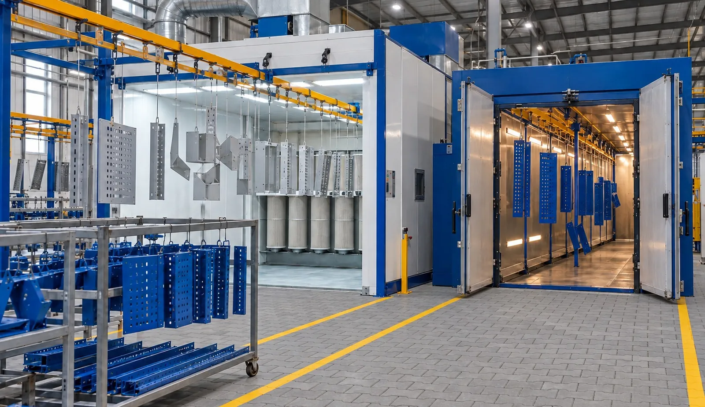

Metal processing and fabrication capabilities
Specialist metal processing and fabrication capabilities for diverse industrial and commercial requirements — each documented with the machines and specifications behind it.
Cutting & blanking

Fiber Laser Cutting
Profiles, plates, brackets and blanks cut on a 2 kW fiber laser with a 1,500 × 3,000 mm bed — programmed directly from the DXF files you supply.
Learn more
Sheet Metal Shearing
Straight-cut blanks and strips prepared on two NC shearing machines: hydraulic up to 6 mm × 3,000 mm, and pneumatic up to 2.5 mm × 2,500 mm.
Learn more
Cut-to-Length Processing
Two automatic lines that decoil, level and shear coil into flat sheets at programmed lengths — the starting point for many perforated, bent and fabricated products.
Learn more
Power Pressing & Stamping
Mechanical power presses — including a 65-ton pneumatic high-speed press — cut, punch and blank repeat parts using press tooling, supported by in-house tool and die machining.
Learn more
Metal Saw Cutting
A saw cutting machine parts bar, sections and solid stock — listed capacity up to 400 × 100 mm — before machining or fabrication.
Learn morePerforating & expanding

Metal Perforation
Metal perforation has been at the core of JASSCO's work since 1990. Today the plant runs CNC and mechanical perforation machines for sheet and coil up to 5 mm thick and 1,280 mm wide.
Learn more
Expanded Metal Manufacturing
Sheet is slit and stretched in a single operation to form an interconnected diamond mesh — lightweight, rigid and with no material lost as scrap. JASSCO runs three mechanical expanding machines.
Learn moreForming

CNC Sheet Metal Bending
Two 3-axis CNC hydraulic bending machines — one for long parts up to 4,000 mm, one for heavier gauges up to 10 mm — forming brackets, channels, trays, panels and enclosures.
Learn more
Sheet Metal Rolling
Two automatic slip rolling machines with a 1,300 mm feeding width roll flat and perforated sheet into cylinders, tubes and curved panels.
Learn more
Hydraulic Pipe Bending
A hydraulic pipe bending machine forms pipe profiles with wall thickness up to 5 mm for frames, supports and tubular assemblies.
Learn moreWelding & joining

MIG Welding
Five MIG (wire-feed) welding sets, rated up to 10 mm, join frames, supports, brackets and enclosures as part of JASSCO's fabrication programme.
Learn more
TIG / Argon, Pulse & Linear Welding
For thinner material and clean, controlled seams, JASSCO uses argon-shielded welding — including pulse welding up to 3 mm and special-purpose linear welding machines with a 1,000 mm weld length.
Learn more
Pneumatic Seam Welding
A pneumatic transformer welding machine for seam and overlap welds on sheet up to 2 mm thick.
Learn moreMachining

CNC Vertical Machining
Two CNC vertical machining centres support JASSCO's own press tools and dies, and machine components to customer drawings.
Learn more
Surface Grinding
Two surface grinders finish flat faces on tooling, dies and components — supporting the press and perforation tools used across the plant.
Learn more
Turning & Lathe Machining
Three mechanical lathes produce shafts, pins, sleeves, spacers and turned features — from long, large-diameter work up to 4,200 × Ø 1,000 mm down to smaller parts.
Learn moreFinishing & assembly

In-house Powder Coating
An integrated finishing stage for fabricated metal products, bringing component manufacture and surface finishing within the same production programme.
Learn more
Assembly, Finishing & Packaging
JASSCO supports requirements ranging from individual fabricated parts to fully assembled products — with assembly, finishing, packaging and fulfilment completing the programme.
Learn moreThe machines behind each capability
25 documented equipment categories at our Ghiloth plant. Select a machine for its full specification, or a capability for how we use it.